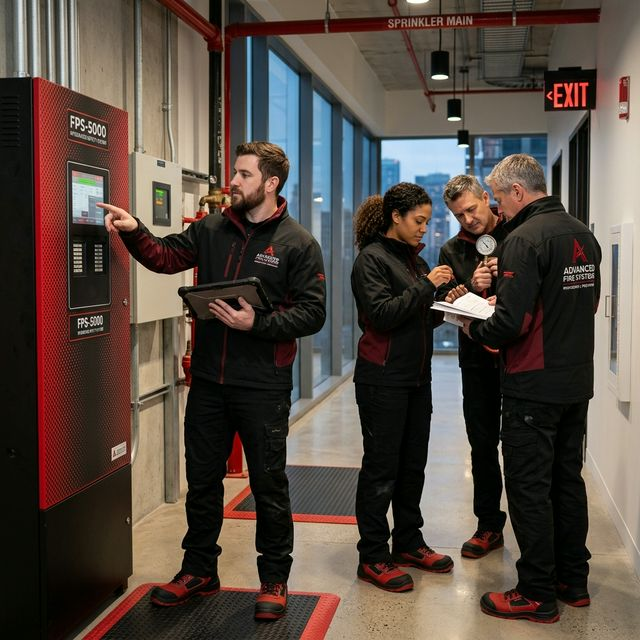

Exploitation du
SSI.
Devenez expert dans la gestion de votre Système de Sécurité Incendie pour garantir une protection optimale de votre établissement.
Devenez expert dans la gestion de votre Système de Sécurité Incendie pour garantir une protection optimale de votre établissement.

Maîtrisez les équipements de détection, d'alarme et de mise en sécurité (SSI) pour une exploitation quotidienne sereine et efficace.

L'exploitation du SSI répond à des exigences réglementaires strictes pour garantir la fiabilité du système en cas de sinistre.
Compréhension des interactions entre détection, alarme et mise en sécurité.
Tenue du registre de sécurité et suivi des opérations de maintenance logicielle.
Garantir le déclenchement automatique et manuel des dispositifs de compartimentage.
Une immersion pratique sur vos propres installations pour une montée en compétences opérationnelle.